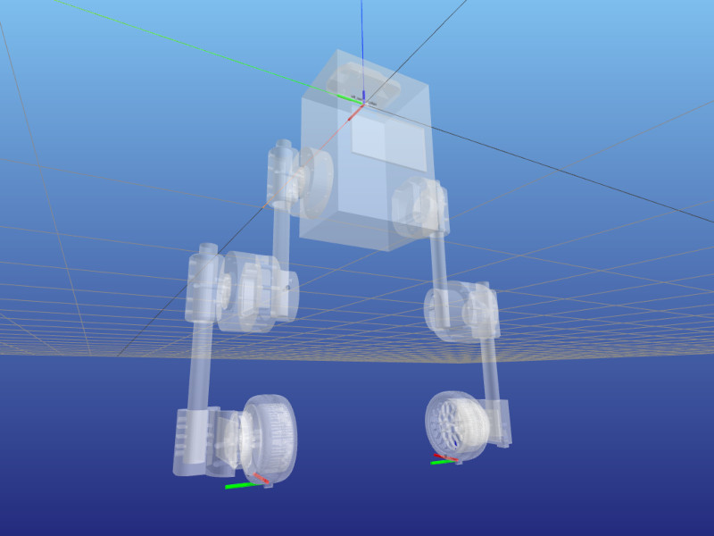
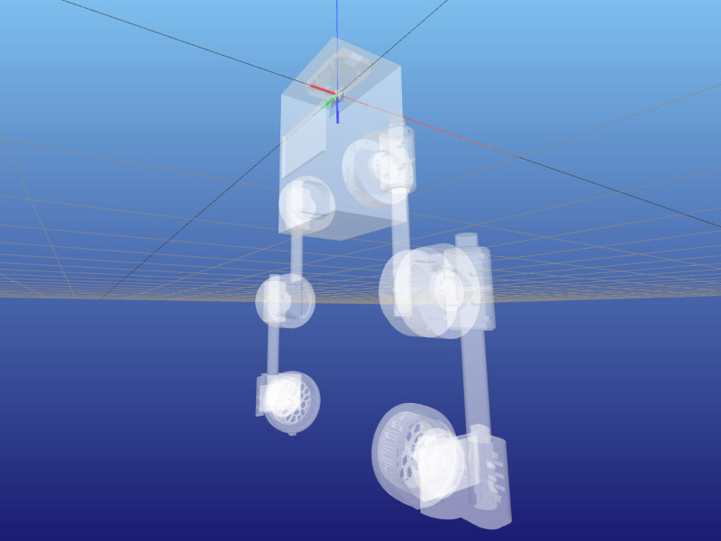

- Generated by
 1.9.5
1.9.5
|
upkie 10.0.0
Open-source wheeled biped robots
|
This page is about the geometry and joint properties of Upkies. Mechanics and electronics are discussed in the Hardware wiki.

Anchor frames are attached to the stator of the ankle on each leg. Their orientation compared to the stator frame is such that they are aligned with the torso in the neutral configuration.
Right-click on the image to the right and open it in a new tab/window to see the frame orientation better. This image was generated by running python examples/display_frames.py --filter contact from the upkie_description repository.
The attitude reference system (ARS) frame is an inertial frame of reference used by the IMU filter onboard the pi3hat. It has its x-axis pointing forward, y-axis pointing to the right and z-axis pointing down (details). This is not the convention we use in the world frame, and the rotation matrix from the ARS frame to the world frame is:
\( R_{WA} = \begin{bmatrix} 1 & 0 & 0 \\ 0 & -1 & 0 \\ 0 & 0 & -1 \\ \end{bmatrix} \)

The IMU frame has the orientation of the pi3hat IMU:
Right-click on the image to the right and open it in a new tab/window to see the frame orientation better. This image was generated by running python examples/display_frames.py --only imu from the upkie_description repository.
| Joint | Limit | Value (±) | Why? |
|---|---|---|---|
| Hip | Position | 1.26 rad | Geometry: cables fully stretched |
| Hip | Velocity | 28.8 rad/s | See qdd100 details below |
| Hip | Torque | 16.0 Nm | Peak torque (< 1 s) from the qdd100 spec |
| Knee | Position | 2.51 rad | Geometry: wheels touching hip actuators. |
| Knee | Velocity | 28.8 rad/s | See qdd100 details below |
| Knee | Torque | 16 Nm | Peak torque (< 1 s) from the qdd100 spec |
| Wheel | Position | - | No limit |
| Wheel | Velocity | 111 rad/s | See mj5208 details below |
| Wheel | Torque | 1.7 Nm | See mj5208 details below |
For qdd100's: peak velocities are rated as 3,600 dps at 36 V and 2,300 dps at 24 V. Assuming a linear velocity-voltage relationship (which is a big assumption, for instance the actual maximum velocity will also depend on servo.pwm_rate_hz) leads to 1,650 dps at the 18 V of the RYOBI batteries used on Upkie, or equivalently 28.8 rad/s after conversion and rounding.
For mj5208's: peak velocities from the mj5208 spec are rated as 7,500 rpm, or approximately 785 rad/s. Multiplying by the wheel radius of your typical Upkie (between 5 and 6 cm), we obtain a ground speed comparable to that of a car on a highway. We scale this down a notch! Backtracking from a top ground speed at 20 km/h, we obtain a maximum velocity around 111 rad/s.
There are some conventions used in the URDF description of the robot model. You should read this section if you are planning on customizing the default upkie_description. If you are creating your own wheeled-biped description and plan on running Upkie's software on it, head over to [this section](Custom hardware}.
In what follows, we assume you are familiar with the informal URDF standard from the ROS wiki, in particular the urdf/XML/joint and urdf/XML/link pages.
Links and joints are grouped by "assemblies". We can recognize assemblies in link and joint names:
<assembly>_<identifier>, for example left_hip_qdd100_stator denotes the stator of the qdd100 of the left hip.<child_link>_fix, for instance the left_hip_qdd100_stator_fix that attaches the qdd100 stator of the left-hip assembly to the torso.left_hip or right_wheel.Note that the moteus convention is that positive angles correspond to clockwise rotations when looking at the rotor / back of the moteus board. This is opposite to the URDF default, so our motor stator-rotor joint axes are aligned with the -z axis of the joint frame. See moteus direction configuration for details.
Virtual links have a net mass of 1 gram. Setting the mass of a virtual link to zero prevents the base link from free-floating in Bullet. Since our description does not account for screws and cables anyway, the additional 1 gram per virtual link should not make a significant difference.
Virtual links should also contain a visual geometry (see this comment).